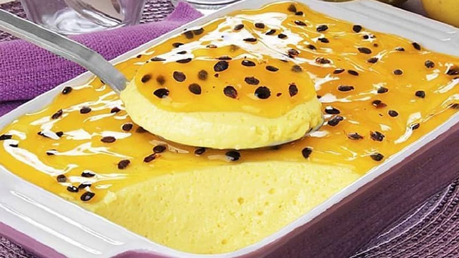
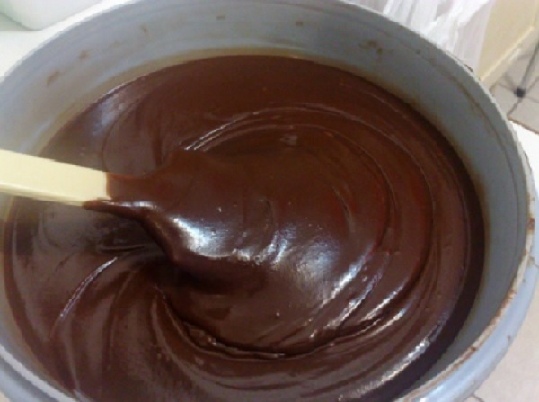
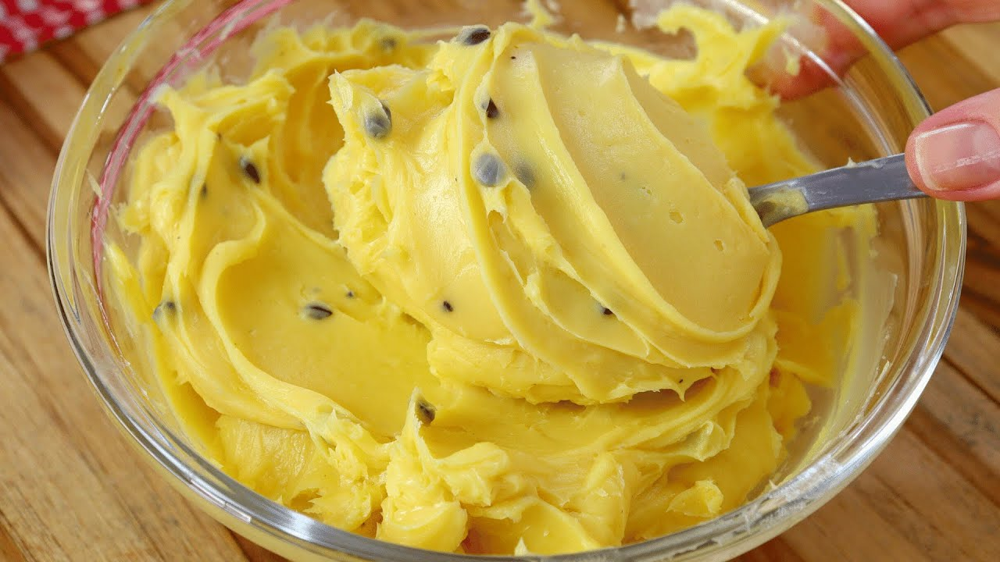

Tema III
Recheios de moda
Yougurte caseiro
"John Sabores"
Ingredientes:
- 200 ml de água morna
- 100 ml de água natural
- 400gm de leite em pó
- 50gm de iogurte natural
- 200gm de açúcar.
Como fazer:
- Começa por pegar uma tigela normal e coloque a água natural e o leite e bata com uma batideira electrica.
- Em seguida adicione a água morna e bata durante 1min, e depois coloque o iogurte já feito e bata novamente, depois de bater tapa muito bem de deixa descansar durante 8horas.
- Depois de discansa coloque o açúcar e a essência e bata mas 1vez.
- Depois disso leve ao figufico , depois de sair do figurifico Toma bem que vaz Amar.

Musse de maracujá
"John Sabores"
Ingredientes:
- 2 pacotes de natas
- 4 maracujas separe o sumo das sementes
- 1 lata de leite condensado.
Como fazer:
- Começa por pegar em uma tigela e bata as natas depois de ficar cremosa adiciona o leite e bata durante 1min.
- Em seguida adicione o sumo de maracujá e bata novamente, depois coloque as sementes por cima e leve ao figufico.
- Depois de sair toma bem que vaz Amar.

Recheio de chocolate
"John Sabores"
Ingredientes:
- 4 latas de leite condensado
- 8 colher de manteiga
- 300gm de chocolate em pó.
Como fazer:
- Em uma panela coloque o leite a manteiga e o chocolate em pó mistura muito bem e leve ao fogo e daí misturando sem parar.
- Depois da fervura do chocolate baixar disliga o fogo e leve ao figufico.
- Depois de sair do figurifico recheia bem que vaz Amar.

Recheio de maracujá
"John Sabores"
Ingredientes:
- 2 pacotes de natas
- 1 lata de leite condensado
- 1 pacote de sumo de Maracujá em pó
- 1 maracujá
- 3 colher de leite em pó.
Como fazer:
- Começa por pegar em uma tigela normal e coloque 1 pacote de natas e bata, depois adicione o leite e bata mas 1 min, também adicione o sumo em pó e bata novamente.
- Depois disso pegue uma outra tigela normal e coloque a nata e bata depois coloca o leite e volta a bater.
- Depois de bater junta tudo e misture, em seguida coloque a maracujá e misture, depois leve ao Figurifico.
- Depois de levar no figurifico recheia bem que Vaz Amar.
